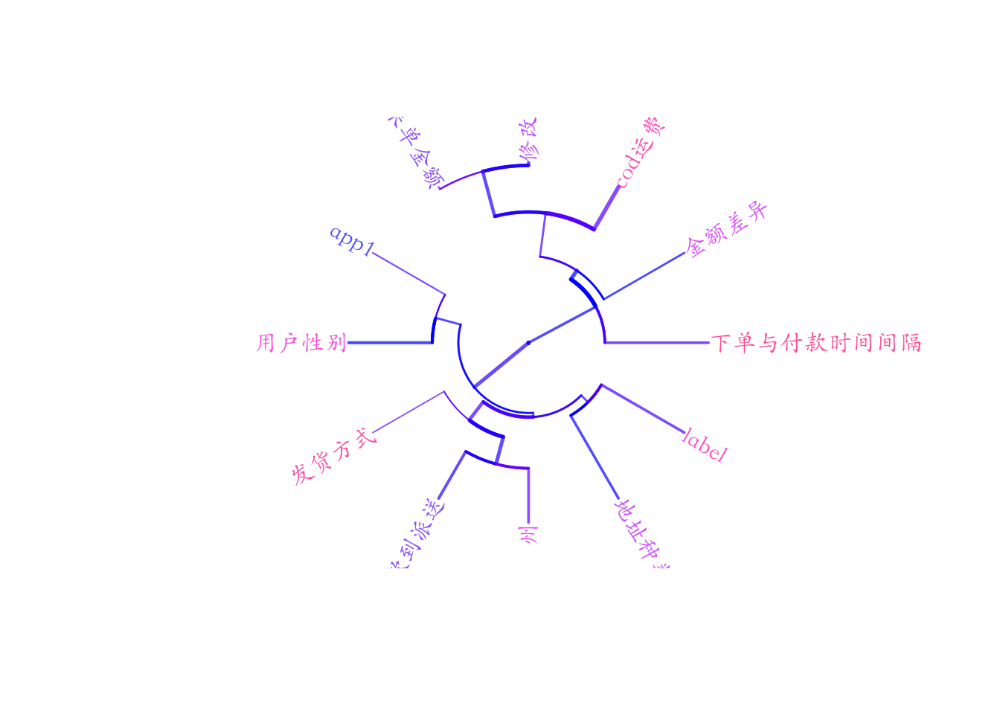

Chapter 4 多元数据分析 - 聚类，降维
We describe our methods in this chapter.
对变量的聚类可以讲含有相同信息的变量聚为同一个族类
当我们有大量的变量的时候，这种方法可以很好的用于进行降维。同样可以用于降维的方法还有主成分分析和因子分析。
Model_data1$app1 <- as.factor(Model_data1$app1)
Model_data1$label <- as.factor(Model_data1$label)
Model_data1$地址种类 <- as.factor(Model_data1$地址种类)
Model_data1$发货方式 <- as.factor(Model_data1$发货方式)
Model_data1$用户性别 <- as.factor(Model_data1$用户性别)
Model_data1$州 <- as.factor(Model_data1$州)factors <- sapply(Model_data1, is.factor)
#subset Qualitative variables
vars_quali <- Model_data1 %>% select(names(Model_data1)[factors])
#vars_quali$good_bad_21<-vars_quali$good_bad_21[drop=TRUE] # remove empty factors
str(vars_quali)## Classes 'data.table' and 'data.frame': 322715 obs. of 6 variables:
## $ 地址种类: Factor w/ 6 levels "Inappropriate",..: 6 6 4 6 4 6 6 6 4 6 ...
## $ app1 : Factor w/ 71 levels "android_2.33",..: 67 42 45 40 42 67 42 32 42 29 ...
## $ 发货方式: Factor w/ 3 levels "Delhivery","Ecom",..: 1 1 2 2 1 1 1 2 2 1 ...
## $ 用户性别: Factor w/ 3 levels "men","not set",..: 3 3 1 3 1 3 3 3 3 1 ...
## $ 州 : Factor w/ 70 levels "Andaman and Nicobar Islands",..: 59 59 38 38 29 29 29 14 29 29 ...
## $ label : Factor w/ 2 levels "0","1": 1 1 1 1 1 1 1 1 1 1 ...
## - attr(*, ".internal.selfref")=<externalptr>#subset Quantitative variables
vars_quanti <- Model_data1 %>% select(names(Model_data1)[!factors])
str(vars_quanti)## Classes 'data.table' and 'data.frame': 322715 obs. of 6 variables:
## $ 下单与付款时间间隔: num 19.5 16.9 17.4 16.9 19.6 ...
## $ cod运费 : num 1.55 1.55 1.55 1.55 1.55 1.55 1.55 1.55 1.55 1.55 ...
## $ 修改后金额 : num 5.6 6.92 10.32 4.67 10.26 ...
## $ 原始来单金额 : num 5.6 6.92 10.32 4.67 10.26 ...
## $ 金额差异 : num 0 0 0 0 0 0 0 0 0 0 ...
## $ 付款到派送 : num 2.71 -0.477 -0.151 -0.127 -0.17 ...
## - attr(*, ".internal.selfref")=<externalptr>4.1 6 变量的层次聚类
tree <- hclustvar(X.quanti=vars_quanti,X.quali=vars_quali)
par(family='STKaiti')
plot(tree, main="variable clustering")
rect.hclust(tree, k=8, border = 1:8)
summary(tree)## Length Class Mode
## call 3 -none- call
## rec 16 -none- list
## init 12 -none- numeric
## merge 22 -none- numeric
## height 11 -none- numeric
## order 12 -none- numeric
## labels 12 -none- character
## clusmat 144 -none- numeric
## X.quanti 6 data.table list
## X.quali 6 data.table list# Phylogenetic trees
# require library("ape")
par(family='STKaiti')
plot(as.phylo(tree), type = "fan",
tip.color = hsv(runif(15, 0.65, 0.95), 1, 1, 0.7),
edge.color = hsv(runif(10, 0.65, 0.75), 1, 1, 0.7),
edge.width = runif(20, 0.5, 3), use.edge.length = TRUE, col = "gray80")
summary.phylo(as.phylo(tree))##
## Phylogenetic tree: as.phylo(tree)
##
## Number of tips: 12
## Number of nodes: 11
## Branch lengths:
## mean: 0.2498154
## variance: 0.02762882
## distribution summary:
## Min. 1st Qu. Median 3rd Qu. Max.
## 0.01203149 0.11483605 0.24931255 0.40189405 0.49995107
## No root edge.
## First ten tip labels: 下单与付款时间间隔
## cod运费
## 修改后金额
## 原始来单金额
## 金额差异
## 付款到派送
## 地址种类
## app1
## 发货方式
## 用户性别
## No node labels.part<-cutreevar(tree,8)
print(part)##
## Call:
## cutreevar(obj = tree, k = 8)
##
##
##
## name
## "$var"
## "$sim"
## "$cluster"
## "$wss"
## "$E"
## "$size"
## "$scores"
## "$coef"
## description
## "list of variables in each cluster"
## "similarity matrix in each cluster"
## "cluster memberships"
## "within-cluster sum of squares"
## "gain in cohesion (in %)"
## "size of each cluster"
## "synthetic score of each cluster"
## "coef of the linear combinations defining the synthetic scores of each cluster"summary(part)##
## Call:
## cutreevar(obj = tree, k = 8)
##
##
##
## Data:
## number of observations: 322715
## number of variables: 12
## number of numerical variables: 6
## number of categorical variables: 6
## number of clusters: 8
##
## Cluster 1 :
## squared loading correlation
## 1 1
##
##
## Cluster 2 :
## squared loading correlation
## 修改后金额 0.93 -0.96
## 原始来单金额 0.92 -0.96
## cod运费 0.65 -0.81
##
##
## Cluster 3 :
## squared loading correlation
## 1 1
##
##
## Cluster 4 :
## squared loading correlation
## 州 0.68 NA
## 付款到派送 0.56 -0.75
## 发货方式 0.44 NA
##
##
## Cluster 5 :
## squared loading correlation
## 1 NA
##
##
## Cluster 6 :
## squared loading correlation
## 1 NA
##
##
## Cluster 7 :
## squared loading correlation
## 1 NA
##
##
## Cluster 8 :
## squared loading correlation
## 1 NA
##
##
## Gain in cohesion (in %): 80.384.2 7 通过聚类选取部分变量
# cod运费
# 付款到派送
# keep<- c(1,2,3,4,7,8,10,12)
cdata_reduced_2 <- Model_data1 # %>% select(keep)
str(cdata_reduced_2)## Classes 'data.table' and 'data.frame': 322715 obs. of 12 variables:
## $ 地址种类 : Factor w/ 6 levels "Inappropriate",..: 6 6 4 6 4 6 6 6 4 6 ...
## $ app1 : Factor w/ 71 levels "android_2.33",..: 67 42 45 40 42 67 42 32 42 29 ...
## $ 下单与付款时间间隔: num 19.5 16.9 17.4 16.9 19.6 ...
## $ cod运费 : num 1.55 1.55 1.55 1.55 1.55 1.55 1.55 1.55 1.55 1.55 ...
## $ 修改后金额 : num 5.6 6.92 10.32 4.67 10.26 ...
## $ 原始来单金额 : num 5.6 6.92 10.32 4.67 10.26 ...
## $ 金额差异 : num 0 0 0 0 0 0 0 0 0 0 ...
## $ 付款到派送 : num 2.71 -0.477 -0.151 -0.127 -0.17 ...
## $ 发货方式 : Factor w/ 3 levels "Delhivery","Ecom",..: 1 1 2 2 1 1 1 2 2 1 ...
## $ 用户性别 : Factor w/ 3 levels "men","not set",..: 3 3 1 3 1 3 3 3 3 1 ...
## $ 州 : Factor w/ 70 levels "Andaman and Nicobar Islands",..: 59 59 38 38 29 29 29 14 29 29 ...
## $ label : Factor w/ 2 levels "0","1": 1 1 1 1 1 1 1 1 1 1 ...
## - attr(*, ".internal.selfref")=<externalptr>